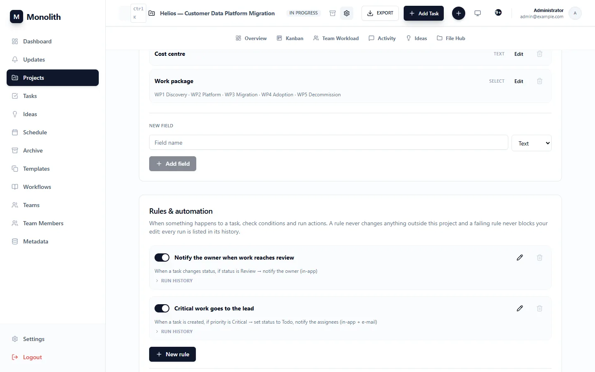

Automation
Make the routine happen by itself: rules that react to task events, messages to your chat tools, projects that start from a template, procedures everyone follows, and data that leaves in a spreadsheet.
Automation rules
Project Settings › Rules & automation (project admins edit; every member reads rules and their history). A rule runs its actions in order when its trigger happens, if all its conditions hold.
| Part | Options |
|---|---|
| Trigger | task_created, status_changed, assigned, task_completed, due_soon (open tasks due within 48 h, checked by the daily 07:00 UTC job, once per rule and task) |
| Conditions (all must hold) | status, previous status (status_changed only), priority, assignee, title, tags, milestone, due date; operators is, is not, any of, none of, contains, is set, is empty |
| Actions | change status, priority or assignee; assign a user; notify assignees, the owner or a user (in-app, optionally e-mail; text may use {task_title} {status} {priority} {project}); call one of the project's webhooks |
Example
{
"name": "Critical work needs a reviewer",
"trigger": "status_changed",
"conditions": [{"field": "status", "op": "eq", "value": "Review"},
{"field": "priority", "op": "eq", "value": "Critical"}],
"actions": [{"type": "notify", "to": "owner", "message": "{task_title} is ready for review"}]
}
How it runs
- Isolated: each rule's actions run in a savepoint. A failing rule undoes only itself, is recorded with the error, and never fails the change that triggered it.
- Loop-safe: actions that change the task fire events again, at most 3 levels deep and once per rule and task per chain; skips are recorded.
- Audited: every run (ok or error) is kept for 90 days in the rule's Run history.
- Limits: 50 rules per project, 10 conditions and 10 actions per rule. People and webhooks an action uses must belong to the project. Status roll-up from subtasks fires nothing.

Webhooks
Personal webhooks live in Settings › Integrations; project webhooks (attached by project admins) in Project Settings. Providers: Slack ({"text"}), Discord ({"content"}) and generic JSON (event, task, project, changes, url, timestamp).
Project webhooks receive task.created, task.status_changed, task.assigned and task.completed (moving to Done sends only the last). Deliveries are queued in the same transaction as the change and posted by a background worker after the commit: 10 s timeout, no redirects, up to 5 attempts with exponential backoff. 4xx answers other than 408/425/429 fail at once.
Webhook URLs to private or internal addresses (cloud metadata, db, localhost, RFC 1918) are refused when saved and again at send time, unless WEBHOOK_ALLOW_PRIVATE=true.
Project templates
Templates holds reusable project skeletons: a task tree, topic and work-type presets and the global taxonomy a project may use. In the editor, indent lines by two spaces to nest tasks:
Phase 1: Setup Repository and CI Environments Phase 2: Delivery Build Acceptance test
Creating a project from the template builds the whole tree in one transaction. Templates can be private, shared with named co-owners, or public.
Workflows (SOPs)
Workflows is a library of standard operating procedures written in Markdown with LaTeX math ($E = mc^2$) and hover tooltips. Each SOP can be private, shared with co-owners, or public; search finds them by title and content.
Exports
| Export | Where | Formats |
|---|---|---|
| One project (summary or with every task) | project header › export | CSV, XLSX |
| All projects | Projects › export | CSV, XLSX, optionally with archived |
| Tasks | Tasks › Export Tasks | CSV, XLSX |
| Gantt image | Gantt toolbar | PNG |
| Project as JSON | MCP export_project_json | JSON: metadata, members, fields, full task tree |
Exports include the hard deadline, budget and actual cost, WBS codes and assignees.